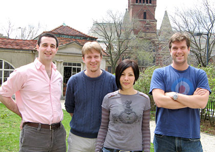

News Archives : 2007 : Embryonic Stem Cells and Cloned Animals Produced by Chromosome Transfer into Mouse Zygotes
by Garrett Birkhof, Kevin Eggan and Dieter Egli
June 14, 2007
|  L to R: Garrett Birkhoff, Dieter Egli, Jacqueline Rosains and Kevin Eggan |
Ten years ago, the cloning of Dolly the sheep confirmed that the mamalian egg (oocyte), possesses the miraculous ability to reprogram the nucleus of an adult somatic (non-germ) cell in such a way as to give rise to any tissue of the body (Wilmut et al. 1997). Researchers have hoped that this ability might be harnessed through the technique of somatic cell nuclear transfer (SCNT) to study, and eventually treat, human diseases. In particular, they hoped to generate patient-matched ES cell lines for therapy and human disease-specific ES cell lines to accelerate the pace of basic research and drug development. Success, however, has proved elusive. Though 12 species have been successfully cloned, and SCNT derived ES cells have been created from mice, there has not yet been a confirmed ES cell line derived via human SCNT. Technical difficulties have taken more time to circumvent than originally expected, but the largest obstacle has been the scarcity of human oocytes available for research.
Returning to the mouse model, our lab sought other cell types that might be able to reprogram a somatic nucleus. The zygote, as the fertilized cell that most closely resembles the oocyte, seemed the obvious choice. However, previous work on zygotes and blastomeres had firmly established that zygotes are inappropriate recipients for nuclear transfer (Wakayama et al. 2000). In these experiments, the entire nucleus, or pair of pronuclei, was removed to initiate nuclear transfer. We reasoned that there might be factors localized to the nucleus that were necessary for reprogramming, and that their removal during enucleation, rather than any sort of natural depletion following fertilization, could explain the zygote’s apparent inability to reprogram. Therefore, extracting the chromosomes after nuclear envelope breakdown during the first embryonic cell division would leave these factors undiminished, and the resulting zygotic cytoplast would have reprogramming abilities similar to those of the oocyte. Our experiments, as detailed in the paper, supported this line of reasoning. The zygote, if its chromatin is removed during mitosis, can support nuclear reprogramming and can be used to clone animals and to generate cloned ES cell lines (Egli et al. 2007).
If these results hold up in the human, it would substantially advance efforts to produce human ES cell lines for disease modeling and transplantation medicine.
References: